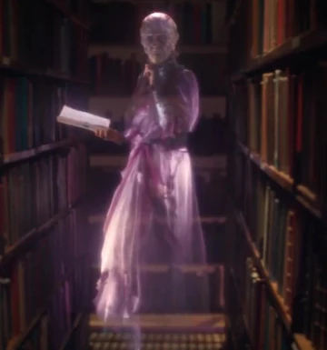

The Librarian and Ghost?
A woman goes into a library and asks the librarian, "Do you have any books on ghosts?"
The librarian looks at her, then replies, "Sure, we have plenty, but they're all checked out."
"Oh, I guess they're haunting someone else," the woman says.
The librarian shrugs and says, "Well, the ghost story section is the most popular. They really spirit away."
For the more jokes go to the home page.
To go to my home page Click here .
